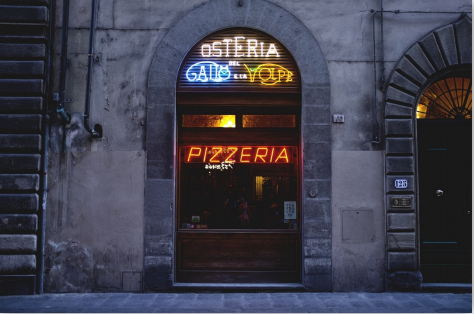
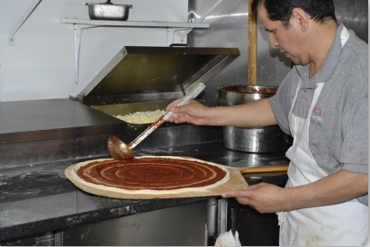
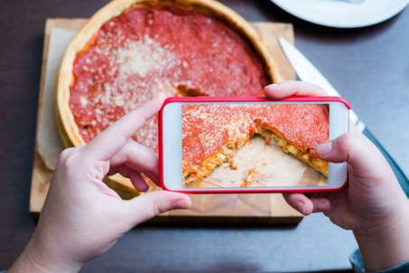
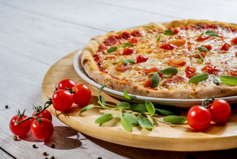

En la actualidad, muchos emprendedores optimizan económicamente todo lo posible para mantener a flote su negocio. Sin embargo ¿Qué tanta importancia o espacio es dado a la fotografía profesional?
Establezcamos el caso de una pizzería tradicional contigo al mando. Imagina que un cliente siente hambre y tu pizzería fue lo primero que vio, pero aun así el simpático cliente, sin que te des cuenta, ya escaneó la limpieza en la entrada, infraestructura, personal amable, etc. Sin embargo, aun con el mejor diseño o inversión en infraestructura, fallaría fatalmente si las pizzas no son buenas.
Sí pero ¿Si no tengo mucho capital para invertir?
Piensa que ya tienes tu pequeño local, bonito, no tan lujoso, pero con buenas pizzas, pero la cruda realidad es que nadie te conoce, todavía vivimos en pandemia, y tú sabes que la recomendación offline no es efectiva. Una salida podría ser lo que estás pensando, recurrir al conocido que te saque de problemas con una foto super editada que en el peor de los casos podría significar publicidad engañosa.
Sin embargo, la idea no es del todo mala, claro que, el primo, sobrino, amigo algún día no tendrá tiempo; ya sabes, estos familiares de hoy en día que no quieren trabajar gratis. Pero, lamento informarte amigo lector, casi todo el mundo hace eso y yo, al menos, nunca querría que tu emprendimiento termine en domingos de pizza en casa porque tienes exceso de insumos.
¿Qué hacer entonces?
Si hablamos de platos, alimentos e ingredientes, todos tienen una historia que contar, y es solo con las fotos profesionales que la comunicación resalta al punto que el cliente viene estimulado tanto o más que entrar a la super pizzería. Pero, sería una pena que tengas tan buenas ideas para hacer la mejor pizza del mundo, pero la presentación no esté a la altura de tu entusiasmo y de tus ganas de trabajar.
En las redes sociales estamos bombardeados de fotos a diario, entre ellas de comida. ¿Tienes hambre solo con pensarlo? Entonces sabes de qué te hablo. Y es precisamente, porque la foto que pongas en las redes de tu negocio debe ser tal, que te debe hacer venir hambre, es decir, que haga que me levante de esta silla desde donde estoy escribiendo y llame a tu pizzería por un delivery, o bueno, a Rappi, si lo deseas.
Pero y, ¿si quisiera mejorar mis habilidades en fotografía para mi propio negocio? En realidad, no está mal probar a hacerlo uno mismo. Lo que hoy quiero que entiendas es que hay que diferenciarse de la competencia, a través de la calidad, lo único y lo genuino y, por esto, te aconsejo a evaluar la posibilidad de obtener fotos profesionales para tu negocio. Por otro lado, sé que te gustaría saber el precio de estas fotos, pero no existe una tarifa fija. Cada proyecto tiene su dificultad y tiempo de elaboración diferente.
¿Y si quisiera ahorrar? ¿Qué opciones tengo?
Si estamos hablando de una vía media entre lo profesional y las fotos anónimas, podrías dirigirte a estudiantes como nosotros del equipo de re-vela2. Estaríamos contentísimos de conocerte, escuchar tus proyectos y hacerte una cotización. Recuerda que no tener una buena presentación fotográfica es un riesgo innecesario que podría causar la pérdida de clientela y de posicionamiento.
Por eso, ofrece la oportunidad a tus clientes de vivir momentos especiales con tu marca. Cuéntales una historia real con fotografía publicitaria.